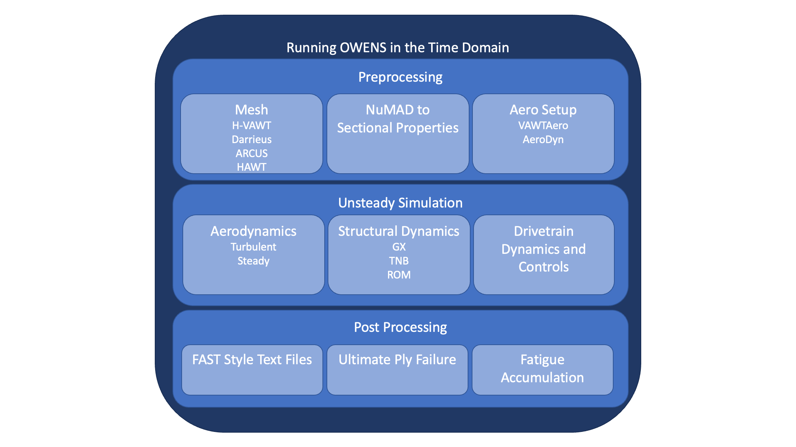

Simply Running OWENS
In this example, we show the first level of what is going on behind the precompiled binary Running julia directly with this as a starting point could make things like automating many runs in a way that is not compatible with the current interface, but your design design fits.
OWENS is comprised of many building blocks. These series of examples progressively shows the internals of several of the key building blocks a new user might employ for their projects. Fundamentally, OWENS has been built to be as generalizable as possible. The lowest level of building blocks enable this, however, there are many common use cases for which helper functions have been developed, such as for meshing certain standard architectures and calculating and applying sectional properties to these architectures. The figure below summarizes this at a high level.

import OWENS
runpath = path = @__DIR__
run_full_example = get(ENV, "OWENS_RUN_DOC_EXAMPLES", "false") == "true"
modelopt = OWENS.ModelingOptions("$(path)/OWENS_Opt.yml")
designparams = OWENS.Design_Data("$path/WINDIO_example.yaml")
if run_full_example
OWENS.runOWENSWINDIO(modelopt,designparams,runpath)
endRunning: WINDIO ExampleHere is an example of using the same model against the automated DLC run script. TODO: issue with CI version of turbsim Note that for a setup cutom to a specific design, you'll want to go to the B level to get all of the detailed inputs correct One of these is the controller where a discon controller library can be coupled instead of the specified RPM control.
modelopt.DLCOptions.DLCs = ["11"] #"normal"
modelopt.DLCOptions.DLCs = ["13","6_1"] #"normal"
OWENS.runDLC(modelopt,designparams,runpath)
nothingThis page was generated using Literate.jl.